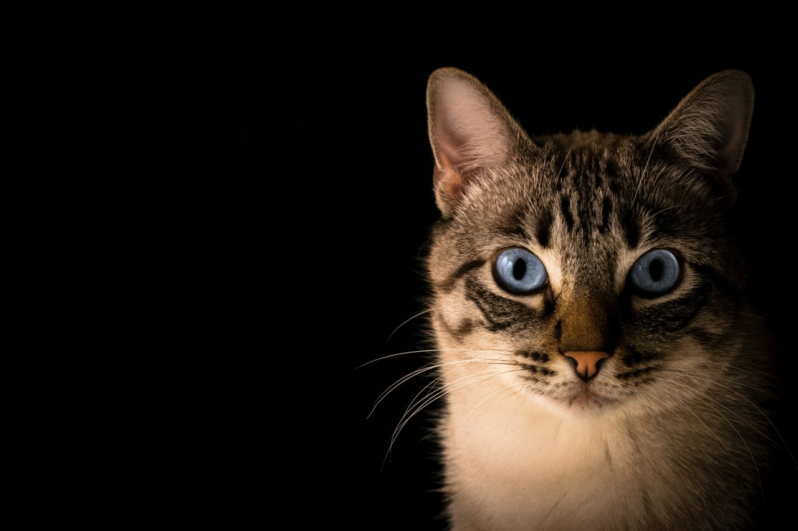
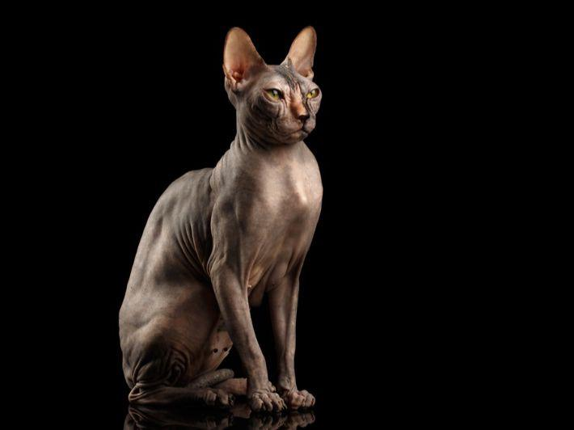
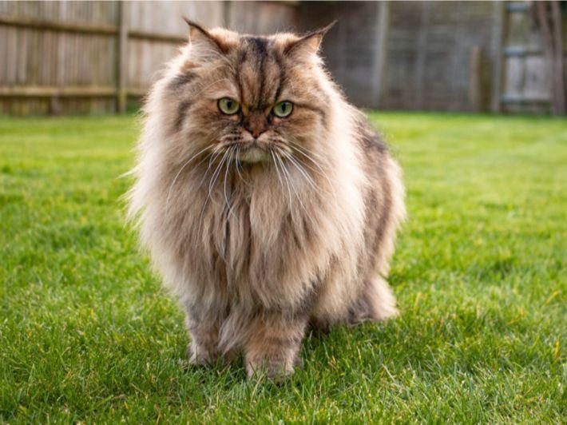

An article about Cats
There are many different breeds of cats, including pharaoh cat, persian cat and other. the cat Fanciers association, which is the world's largest registry of pedigreed cats, recognizes about 40 distinct breeds. the most familiar cats are the domestic shorthair and the domestic longhair, which are really mixtures of different breeds.cat breeds differ in looks, coat length and other characteristics but vary relatively little in size. on average, only 5 to 10 pounds separate the smallest and largest domestic breeds of cats.
pharaonic cat
Nicknamed the pharaoh Cat, for centuries the egyptian mau has capture the hearts of cat lovers worldwide. loved for there sweet personality and playful nature, maus are the type of cats every cat enthusiasts needs to own at some point in their lives. to learn if the egyption mau is the right companion for you
Persian cat
the persian longhair cat breed is one of the oldest cat breeds. the breed originated inpersia, iran, as it is known today. during the seventeenth century, nobility enjoyed the persian cat breed. pietro del val imported the first persian cat to europe in 1626.
